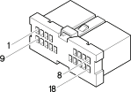

B1D Junction unit ( FRONT )
- Path
- Electrical equipment > Connectors > B Various fuse holders and valves > B1 Junction unit > B1D Junction unit ( FRONT )
- Kind
- connector pinout (pin -> wire colour -> other end)
- Applies to
- engines: 2.5 V6, 3.2 V6, 1.9 JTD 8v , 2.4 JTD 10v; production: fino a 03/98, da 04/98 a 02/99, da 03/99 a 01/00; only with equipment: Q-System
- Interactive page
- https://sloeber94.github.io/elrnDB-a156/en/#/3235145
Applies to: engines: 2.5 V6, 3.2 V6, 1.9 JTD 8v , 2.4 JTD 10v; production: fino a 03/98, da 04/98 a 02/99, da 03/99 a 01/00; only with equipment: Q-System

Wiring | Colour |
|---|---|
BIANCO (white) |
Pin | Cable | Destination | |||
|---|---|---|---|---|---|
Sec.. | Colour | Nodo | Connect. | Pin | |
G (yellow) | |||||
G (yellow) | |||||
G (yellow) | |||||
A (light blue) | |||||
AR (light blue with red stripe) | |||||
HR (grey with red stripe) | |||||
HR (grey with red stripe) | |||||
B (white) | |||||
Z (violet) | |||||
Z (violet) | |||||
AB (light blue with white stripe) | |||||
S (pink) | |||||
AN (light blue with black stripe) | |||||
AV (light blue with green stripe) | |||||
RV (red with green stripe) | |||||
Topics linked from this page (16)
- 12 FRONT
- D2A Front / crossmember coupling ( CROSSMEMBER )
- D4A Front/engine connection ( ENGINE )
- D5A Front / ABS couping ( ABS )
- D5B Front / ABS couping ( ABS )
- E15A Rev counter ( FRONT )
- E15B Rev counter ( FRONT )
- F20 Left side repeater
- F21 Right side repeater
- H10 Controls for headlamp alignment, instrument lighting adjustment
- I30 Brake pedal switch
- M30B Alarm control unit ( FRONT )
- N30 Left headlamp alignment corrector motor
- N31 Right headlamp alignment corrector motor
- P10A High-tone horn ( ABS )
- P11A Low-tone horn ( ABS )